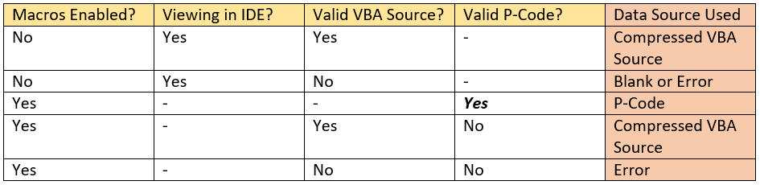
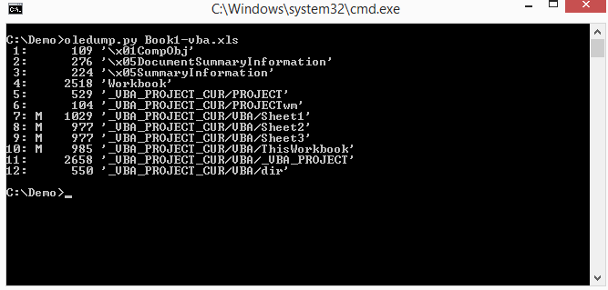
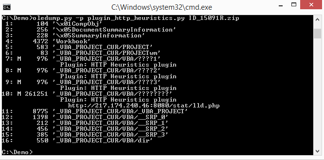
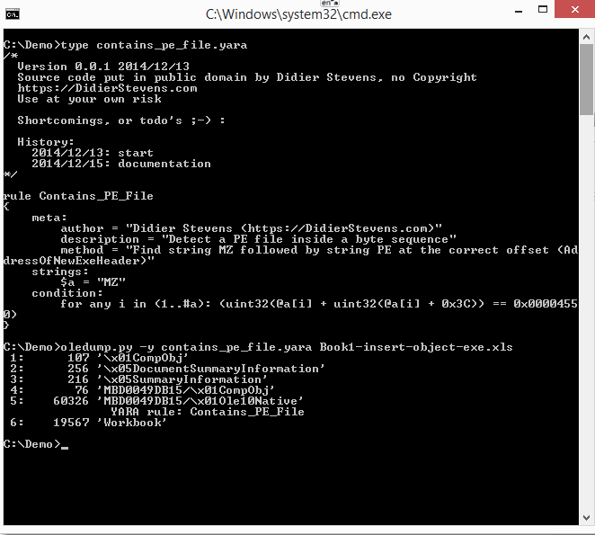

关于宏
宏病毒是一种常见的计算机病毒，寄存在文档或模板中，但是并不会直接感染可执行程序。其诞生于上世纪90年代，自其诞生之日，各种各样的宏病毒不断在网络上涌现。早期的宏病毒是病毒先驱者们展现高超技术的舞台，只感染文档文件，随着时间的推移，宏病毒的危害也越来越大，宏病毒不再只是感染文档文件，而成为了分发恶意程序的常规途经。宏病毒的执行简易隐蔽快速，一旦用户打开含有宏病毒的文档，其中的宏病毒就会被执行。
对于攻击者而言，宏病毒是一把利器，尤其是结合了社会工程学的宏病毒。如乌克兰电网事件（BlackEnergy），工作人员只是打开了一篇看似很正常的文档，然后便造成了无法挽回的损失。不只是BlackEnergy，近来肆虐的各种各样的勒索软件，都离不开Office宏的帮助。借助传统的宏病毒，一旦用户打开含有宏病毒的文档，其中的宏病毒就会被执行，释放并激活恶意软件
宏
广义上的宏指的是一些命令组织在一起，作为一个单独命令完成一个特定任务；狭义上的宏指office系列办公软件中的宏，本文中提及到的宏都是office办公软件下的宏。
Office宏，译自英文单词Macro。宏是Office自带的一种高级脚本特性，通过VBA代码，可以在Office中去完成某项特定的任务，而不必再重复相同的动作，目的是让用户文档中的一些任务自动化。而宏病毒是一种寄存在文档或模板的宏中的计算机病毒。一旦打开这样的文档，其中的宏就会被执行，于是宏病毒就会被激活，转移到计算机上，并驻留在Normal模板上。
宏病毒
在计算机技术的历史中，宏病毒（英语：Macro virus）是一种使得应用软件的相关应用文档内含有被称为宏的可执行代码的病毒。一个电子表格程序可能允许用户在一个文档中嵌入“宏命令”，使得某种操作得以自动运行；同样的操作也就可以将病毒嵌入电子表格来对用户的使用造成破坏。
宏病毒的另一个特别危险的特征体现于它们有时能够感染运行不同操作系统平台上的的电脑。比如Microsoft Word宏病毒可以感染使用微软公司视窗系统的Word用户，同样也可以感染使用苹果公司Macintosh电脑的用户。
绝大多数的宏病毒都是根据微软公司系列软件所特有的宏功能所编写，这一方面是因为其他应用软件对编写宏病毒来说十分困难，另一方面也是因为微软公司系列软件得到了最广泛的使用，以致于它们成为了这些电脑病毒的首要目标。
值得一提的是目前的一些攻击诸如水坑攻击、鱼叉攻击等都会通过宏利用方式投递下一步控制的恶意样本。
office文件格式
要认识宏病毒就要了解宏病毒是如何在office系列办公软件中运行的，这就需要对office系列办公软件的文件格式有所了解。
微软最初使用的是OLE文件格式，OLE文件数据管理方式类似磁盘管理，该方式能够有效组装各个零件，但是却不够灵活。在office2007中，微软推出了OpenXML文件格式，该文件格式其实是标准的压缩文件格式，通过XML组装各个零件。OpenXML文件格式足够灵活，同时也“解决”了office文档最大的安全问题——宏病毒威胁，微软将所有宏相关的内容都放进了vbaProject.bin文件中，只要文件中不包含vbaProject.bin，就不可能含有宏，也就不可能是宏病毒。于是，微软推出了以x结尾(docx)和以m结尾(docm)的两大类文档文件，这两类文件均是OpenXML文件，但是以x结尾的文件中不含有vbaProject.bin。
OpenXML及OLE
目前office系列办公软件使用最多的是word、Excel、PowerPoint(PPT)文件，其默认均采用OpenXML格式，。OpenXML在2006年12月成为了ECMA规范的一部分，编号为ECMA376；并于2008年4月通过国际标准化组织的表决，并于两个月后公布为ISO／IEC 29500国际标准。
另一种结构是office 97-03的存储规范：OLE。它是一种对象链接和嵌入的技术，该技术可以包含文本，图形，电子表格甚至其他二进制数据。关于Word、Excel 和 PowerPoint 的文件格式参考请参考链接Word、Excel 和 PowerPoint 的文件格式参考。
Office文档（如：.doc、.ppt、.xls等）很多是复合文档（OLE文件），所有文件数据都是存储在一个或多个流中。每个流都有一个相似的数据结构，用于存储元数据的数据结构。这些元数据有用户和系统的信息、文件属性、格式信息、文本内容、媒体内容。宏代码信息也是以这种方式存储在复合文档中的。为了在Office文档文件中提取出宏代码，必须能够解析复合文档的二进制格式，下面以word为例，分析复合文档的二进制结构。
.doc文件是一种普通的OLE文件(复合文件)，能够包含宏。而.docx和.docm文件，实际上都是是压缩文件
目前本人已知的可以在office办公系列的文件格式中启用宏的文件后缀为doc、xls、ppt及文件后缀最后字母为m的文件；攻击者使用最多的文件格式为doc、xls，还有部分docx、xlsx类型的远程模板注入。
宏病毒惯用对抗手段
自动执行
宏病毒分析的第一步是定位自动执行入口。宏病毒具有自动执行的特性，特别是含有AutoOpen的宏，一旦用户打开含有宏的文档，其中的宏就会被执行，而用户一无所知。宏病毒的激发机制有三种：利用自动运行的宏，修改Word命令和利用Document对象的事件。
宏病毒中常用的自动执行方法有两种：一种是用户执行某种操作时自动执行的宏，如Sub botton(),当用户单击文档中的按钮控件时，宏自动执行；另一种则是Auto自动执行，如Sub AutoOpen()和Sub AutoClose()，分别在文档打开和关闭时自动执行。
隐秘执行
宏病毒利用几行代码就可以实现隐秘，下面程序为宏病毒通过阻止弹出各类提示，防止用户发现宏正在运行来实现自我隐藏：
On Error Resume Next '如果发生错误，不弹出错误对话框
Application.DisplayStatusBar = False '进制显示状态栏
Options.SaveNormalPrompt = False '修改公用模板时自动保存，不弹出提示宏病毒自我隐藏还有一种方式，那就是屏蔽菜单按钮和快捷键，普通用户即使猜测到有宏正在运行，也无法取消正在执行中的宏，查看宏信息。下表是笔者总结的宏病毒采取的隐蔽执行的一些措施：
| 代码 | 措施 |
|---|---|
| On Error Resume Next | 如果发生错误 不弹出错误对话框 |
| Application.DisplayStatusBar=False | 不显示状态栏 避免显示宏的运行状态 |
| Opition.SaveNormalPrompt=False | 修改公用模版时在后台自动保存 不给任何提示 |
| EnableCancelKey=wdCancelDisabled | 使不可以通过ESC键取消正在执行的宏 |
| Application.SreenUpdating=0 | 不让屏幕更新 使病毒执行不影响计算机速度 |
| Application.DisplayAlerts=wdAlertsNone | 不让Excel弹出报警信息 |
| CommandBars(“Tools”).Controls(“Marco”).Enable=0 | 屏蔽工具菜单中的宏按钮 |
| CommandBars(“Marco”).Controls(“Security”).Enable=0 | 屏蔽宏菜单中的安全性 |
| CommandBars(“Marco”).Controls(“Marco”).Enable=0 | 屏蔽宏菜单中的宏 |
| CommandBars(“Tools”).Controls(“Customize”).Enable=0 | 屏蔽工具菜单的自定义 |
| CommandBars(“View”).Controls(“Toolsbars”).Enable=0 | 屏蔽视图宏菜单的工具栏 |
| CommandBars(“format”).Controls(“Object”).Enable=0 | 屏蔽格式菜单的对象 |
调用外部例程和命令执行
宏病毒的强大主要来自与对Windows API和外部例程的调用，通过对大量样本的分析，本文总结出一张宏病毒调用的外部例程表。
| 外部例程 | 介绍 |
|---|---|
| MSXML2.ServerXMLHTTP | Xmlhttp是一种浏览器对象， 可用于模拟http的GET和POST请求 |
| Net.WebClient | 提供网络服务 |
| Adodb.Stream | Stream 流对象用于表示数据流。配合XMLHTTP服务使用Stream对象可以从网站上下载各种可执行程序 |
| Wscript.shell | WScript.Shell是WshShell对象的ProgID，创建WshShell对象可以运行程序、操作注册表、创建快捷方式、访问系统文件夹、管理环境变量。 |
| Poweshell | PowerShell.exe 是微软提供的一种命令行shell程序和脚本环境 |
| Application.Run | 调用该函数，可以运行.exe文件 |
| WMI | 用户可以利用 WMI 管理计算机，在宏病毒中主要通过winmgmts:.\root\CIMV2隐藏启动进程 |
| Shell.Application | 能够执行sehll命令 |
如下所示，使用Wscript.shell实现命令执行功能：
Set oWshell = CreateObject("WScript.Shell")
If ValueTpe = "" Then
oWshell.Regwrite strkey,Value
Else
oWshell.Regwrite strkey,Value,ValueType
End If上表中Wscript.shell、Poweshell、Application.Run、Shell.Application这些外部例程都可以用来执行命令，除此之外，一些API如：Shell( )、CallWindowProc( )也常用于执行命令。
字符串隐写
宏病毒分析比较简单，这是因为任何能执行宏的用户都能查看宏源码，分析人员轻而易举就分析出宏病毒的行为。通过扫描宏中特征字符串，杀软也很容易检测出宏病毒。宏病毒的开发者们便想尽办法隐藏这些特征字符串，下面本文就对宏病毒中这些字符串的隐写方式进行分析。
Chr()函数
Chr()，返回以数值表达式值为编码的字符（例如：Chr(70)返回字符‘F’）。使用Chr函数是最常见的字符串隐写技术,利用ascii码，逃避字符串扫描。如下列代码：
Nrh1INh1S5hGed = "h" & Chr(116) & Chr(61) & "t" & Chr(112) &Chr(58) & Chr(47) & Chr(59) & Chr(47) & Chr(99) & Chr(104) & Chr(97) & "t" & Chr(101) & Chr(97) & Chr(117) & Chr(45) & Chr(100) & Chr(60) & Chr(101) & Chr(115) & Chr(45) & Chr(105) & Chr(108) & "e" & Chr(115) & Chr(46) & Chr(61) & Chr(99) & Chr(111) & Chr(109) & Chr(47) & Chr(60) & Chr(52) & Chr(116) & Chr(102) & Chr(51) & Chr(51) & Chr(119) & Chr(47) & Chr(60) & Chr(119) & "4" & Chr(116) & Chr(52) & Chr(53) & Chr(51) & Chr(46) & Chr(59) & Chr(101) & Chr(61) & Chr(120) & Chr(101)上列代码使用了大量的Chr函数，看似很复杂，实际上就只是一串字符串“ht=tp:/;/chateau-d<es-iles.=com/，4tf33w/<w4t453.;e=xe”。Nrh1INh1S5hGed字符串看着很像一个链接，但是中间多了几个字符，其实处理起来很简单，只要将多余字符删掉就好。将这串字符串命名为Nrh1INh1S5hGed也是为了混淆，但是对于宏病毒分析人员来说，这种混淆并没有增加分析难度，分析人员只需要 全选–查找–替换。
Chr()函数还可以利用表达式，增加技术人员的分析难度：
Ndjs = Sgn(Asc(317 - 433) + 105）
ATTH = Chr(Ndjs) + Chr(Ndjs + 12) + Chr(Ndjs + 12) + Chr(Ndjs + 8)
经过分析发现，上述代码的字符串是：“http://”
Replace()函数
Replace函数的作用就是替换字符串，返回一个新字符串，其中某个指定的子串被另一个子串替换。
承接上文，把Nrh1INh1S5hGed中多余字符去掉，这里使用Replace函数把多余字符替换为空
Nrh1INh1S5hGed = Replace(Replace(Replace(Nrh1INh1S5hGed,Chr(60), ""), Chr(61), ""), Chr(59), "")处理之后：Nrh1INh1S5hGed=“http://chateau-des-iles.com/4tf33w/w4t453.exe”
可以很清晰看出Nrh1INh1S5hGed是一个下载名为w4t453可执行文件的链接。可以猜测w4t453.exe是一个恶意程序，之后一定会执行w4t453.exe。在用户一无所知的情况下，宏已经完成了入侵工作。
CallByname()函数
CallByname函数允许使用一个字符串在运行时指定一个属性或方法。CallByName 函数的用法如下：
Result = CallByName(Object, ProcedureName, CallType, Arguments())CallByName 的第一个参数包含要对其执行动作的对象名。第二个参数，ProcedureName，是一个字符串，包含将要调用的方法或属性过程名。CallType 参数包含一个常数，代表要调用的过程的类型：方法 (vbMethod)、property let (vbLet)、property get (vbGet)，或 property set (vbSet)。最后一个参数是可选的，它包含一个变量数组，数组中包含该过程的参数。
例如：CallByName Text1, “Move”, vbMethod, 100, 100就相当于执行Text1.Move(100,10) 这种隐藏的函数执行增加了分析的难度。
CallByName的作用不仅仅在此，在下面的这个例子中，利用callByName，可以用脚本控制控件:
Dim obj As Object[/align] Set obj = Me
Set obj = CallByName(obj, "Text1", VbGet)
Set obj = CallByName(obj, "Font", VbGet)
CallByName obj, "Size", VbLet, 50
'以上代码="Me.Text1.Font.Size = 50"
Dim obj As Object
Dim V As String
Set obj = Me
Set obj = CallByName(obj, "Text1", VbGet)
Set obj = CallByName(obj, "Font", VbGet)
V = CallByName(obj, "Size", VbGet)
'以上代码="V = Me.Text1.Font.Size"Alias替换函数名
Alias子句是一个可选的部分，用户可以通过它所标识的别名对动态库中的函数进行引用。
Public Declare Function clothed Lib "user32" Alias "GetUpdateRect" (prestigiation As Long, knightia As Long, otoscope As Long) As Boolean如上例所示，clothed作为GetUpdateRect的别名，调用clothed函数相当于调用user32库里的GetUpdateRect函数。事实上喜欢使用别名的不仅仅是宏病毒制造者，普通的宏程序员也喜欢使用别名。使用别名的好处是比较明显的，一方面Visual Basic不允许调用以下划线为前缀的函数，然而在Win32 API函数中有大量C开发的函数可能以下划线开始。使用别名可以绕过这个限制。另外使用别名有利于用户命名标准统一。对于一些大小写敏感的函数名，使用别名可以改变函数的大小写。
利用窗口、控件隐藏信息
控件在宏程序里很常见，有些宏病毒的制造者们便想到利用控件隐藏危险字符串。控件里存放着关键字符串，程序用到上述字符串时，只需要调用标签控件的caption属性。
控件的各个属性（name、caption、controtiptext、等）都可以成为危险字符串的藏身之所。而仅仅查看宏代码，分析者无法得知这些字符串内容，分析者必须进入编辑器查看窗体属性，这大大增加了分析的难度。
利用文件属性
这种方式和利用窗体属性的方式类似，就是将一切能存储数据的地方利用起来。就像Demo3中读取文件详细信息中的备注
恶意行为字符串
不同的宏病毒执行不同的恶意行为，但这些恶意行为是类似的，它们使用的代码往往是相似的。通过大量的样本分析，笔者总结了一些宏病毒执行危险操作时代码中含有的字符串，详见下表：
| 字符串 | 描述 |
|---|---|
| http | URL连接 |
| CallByName | 允许使用一个字符串在运行时指定一个属性或方法，许多宏病毒使用CallByName执行危险函数 |
| Powershell | 可以执行脚本，运行.exe文件，可以执行base64的命令 |
| Winmgmts | WinMgmt.exe是Windows管理服务，可以创建windows管理脚本 |
| Wscript | 可以执行脚本命令 |
| Shell | 可以执行脚本命令 |
| Environment | 宏病毒用于获取系统环境变量 |
| Adodb.stream | 用于处理二进制数据流或文本流 |
| Savetofile | 结合Adodb.stream用于文件修改后保存 |
| MSXML2 | 能够启动网络服务 |
| XMLHTTP | 能够启动网络服务 |
| Application.Run | 可以运行.exe文件 |
| Download | 文件下载 |
| Write | 文件写入 |
| Get | http中get请求 |
| Post | http中post请求 |
| Response | http中认识response回复 |
| Net | 网络服务 |
| WebClient | 网络服务 |
| Temp | 常被宏病毒用于获取临时文件夹 |
| Process | 启动进程 |
| Cmd | 执行控制台命令 |
| createObject | 宏病毒常用于创建进行危险行为的对象 |
| Comspec | %ComSpec%一般指向你cmd.exe的路径 |
VBA Stomping
VBA 在 Office 文档中可以以下面三种形式存在
源代码: 宏模块的原始源代码被压缩，并存储在模块流的末尾。可以删除源代码，并不影响宏的执行
P-Code: 与 VB 语言相同，VBA 同样有 P-Code，通过内置的 VB 虚拟机来解释 P-Code 并执行，平常我们 Alt+F11 打开所看到的正是反编译的 P-Code。
ExeCodes: 当 P-Code 执行一次之后，其会被一种标记化的形式存储在 SRP 流中,之后再次运行时会提高 VBA 的执行速度，可以将其删除，并不影响宏的执行。
每一个流模块中都会存在一个未被文档化的 PerformanceCache，其中包含了被编译后的 P-Code 代码，如果 _VBA_PROJECT 流中指定的 Office 版本与打开的 Office 版本相同，则会忽略流模块中的源代码，去执行 P-Code 代码
VBA Stomping 是一种可以绕过反病毒检测恶意文档生成技术，它最初由 Vesselin Bontchev 博士引起我们的注意（见此处）。VBA stomping 是指销毁 Microsoft Office 文档中的 VBA 源代码，只留下文档文件中称为 p-code 的宏代码的编译版本。在这种情况下，仅基于VBA源代码的恶意文档检测会失败。
在宏文件中，我们看到的宏代码只是一些字符串，真正执行的其实是真正的代码，也就是p-code。只要 p-code 与系统上的当前 VBA 版本兼容，文档实际执行的是存储的 p-code。此外，宏编辑器中显示的内容（一旦启用内容）并不是解压的 VBA 源代码，而是反编译的 p-code。在这种情况下，攻击者可以通过用零或随机字节覆盖 VBA 源代码来完全擦除（stomp），而不仅仅是修改它。
但是，如果我们在不同版本的 Word（使用不同的 VBA 版本）中打开文档，则 p-code 将不可重用。这将强制将 VBA 源代码解压缩并重新编译为 p-code。
使用 VBA Stomping 技术的恶意文档只能使用用于创建文档时相同的 VBA 版本执行。 我们可以通过在恶意文档生成之前对目标进行侦察来确定要使用的适当 Office 版本；或者通过生成具有多个 Office 版本的恶意文档并将其投递到目标上来解决此限制。
Office 文档包含两个用于提取 VBA 的位置，即压缩的 VBA 源代码和 p-code。下表详细说明了在以下情况下使用哪个 VBA 数据源：

从该表中我们可以看到，如果我们有有效的 p-code，则在启用宏时它会忽略压缩的 VBA 源代码，并通过运行 p-code 来执行所有宏功能。作为攻击者，这告诉我们，我们可以完全破坏或修改压缩的 VBA 源代码，并且仍然让我们的恶意文档执行其指定的任务。
规避杀软
- 目前杀软查杀 VBA 基本上都是静态查杀，所以静态免杀至关重要，从源头上讲 Word 是一个 zip 文件，解压之后的 vbaProject.bin 包含着要执行的宏信息，也是杀软的重点关注对象，可以修改该文件名用于规避检测，步骤分以下三步
- 将“vbaProject.bin”重命名为“[重命名].txt”
- 更新“word / _rels / document.xml.rels”中的关系
- 在“[Content_Types] .xml”中，将“bin”替换为“txt”
很多诱饵文档喜欢在 VBA 中启动脚本程序执行 ps 或者从网络上下载一段 shellcode 或恶意程序等等，这样非常容易被杀软的行为拦截拦住，同时沙箱可以根据进程链和流量判定该 word 文档是恶意的，安全分析人员可以轻易的通过监控进程树的方式观察恶意行为。
使用 WMI 来执行后续攻击链，由 WMI 启动的进程的父进程为 wmiprvse.exe 而不是 word.exe 这样就可以与恶意 word 文档取消关联，规避检测。
动态检测沙箱可以利用 dotnet 属性以及 WMI 来检测 Office：是否含有最近的文档，正在运行的任务数，特定进程检查（vbox，vmware 等等），检测备用数据流（ADS），判断计算机是否是域的一部分（Win32_ComputerSystem 类中 PartOfDomain 对象），检测 Bios 信息，检测即插即用信息（Win32_PnPEntity），检查用户名，检测文件名 hash，检测文件名是否被易名，检测 CPU 核心（Win32_Processor），检测应用及个数。
远程模板注入
远程模板注入宏病毒更多使用在OpenXML文件格式中，文件中不包含vbaProject.bin，就无法在本地加载宏；素以攻击者使用远程模板注入技术加载执行宏。
远程模板注入技术在打开docx文件时，此docx文件会打开一个远程站点上的dotm文件，而以m结尾的文档文件是可能携带宏的。
远程模板注入原理
docx文件格式解析
将docx文件解压后，可以发现docx文件的格式如下：

其结构解释如下：

其中document.xml.rels和settings.xml.rels一样都是用于定位文档各零件的。在rels文件Relationship标签中，Target表示零件的文件位置，正常情况下，给值是相对路径，且存在于压缩包中：

通过恶意构造Target，使其执行远程文件，就可以打开远程文件：

宏分析工具
oletools
oletools下载地址请 点击
python-oletools是python工具包，用于分析Microsoft OLE2文件（也称为结构化存储，复合文件二进制格式或复合文档文件格式），例如Microsoft Office文档或Outlook邮件，主要用于恶意软件分析和调试。它基于 OleFileIO_PL解析器。有关 更多信息，请参见 http://www.decalage.info/python/oletools。
oletools 模块及使用方法
- olebrowse：一个简单的GUI，可以浏览OLE文件（例如MS Word，Excel，Powerpoint文档），以查看和提取单个数据流。
- oleid：分析OLE文件以检测可能表明该文件可疑或恶意的特定特征的工具。
- pyxswf：用于检测，提取和分析可能嵌入在MS Office文档（例如Word，Excel和RTF）等文件中的Flash对象（SWF）的工具，该工具对于恶意软件分析特别有用。
- rtfobj：从RTF文件提取嵌入式对象的工具和python模块。
- 和其他一些（即将推出）
olebrowse：
一个简单的GUI，可浏览OLE文件（例如MS Word，Excel，Powerpoint文档），以查看和提取单个数据流。
python olebrowse.py [文件]如果您提供一个文件，它将被打开，否则将出现一个对话框，让您浏览文件夹以打开文件。然后，如果它是有效的OLE文件，将显示数据流列表。您可以选择一个流，然后在内置的十六进制查看器中查看其内容，或将其保存到文件中以进行进一步分析。
oleid：
oleid是一个脚本，用于分析OLE文件（例如MS Office文档）（例如Word，Excel），以检测特定特征，就安全性（例如恶意软件）而言，这些特征可能表明该文件可疑或恶意。例如，它可以检测VBA宏，嵌入式Flash对象，碎片。
python oleid.py [文件]例如：
> C:\oletools>oleid.py word_flash_vba.doc
Filename: word_flash_vba.doc
OLE format: True
Has SummaryInformation stream: True
Application name: Microsoft Office Word
Encrypted: False
Word Document: True
VBA Macros: True
Excel Workbook: False
PowerPoint Presentation: False
Visio Drawing: False
ObjectPool: True
Flash objects: 1pyxswf：
pyxswf是一个脚本，用于检测，提取和分析可能嵌入在诸如MS Office文档（例如Word，Excel）之类的文件中的Flash对象（SWF文件），这对于恶意软件分析特别有用。
它可以通过正确解析其OLE结构从MS Office文档中提取流，这在流被分段时是必需的。流分段是一种已知的混淆技术，如 http://www.breakingpointsystems.com/resources/blog/evasion-with-ole2-fragmentation/所述
通过解析以十六进制格式（-f选项）编码的嵌入式对象，它也可以从RTF文档中提取Flash对象。
为此，只需添加-o选项以在OLE流而不是原始文件上工作，或者添加-f选项以在RTF文件上工作。
用法如下：
pyxswf.py [选项] <file.bad>
选项：
-o，--ole解析OLE文件（例如Word，Excel）在每个流中查找SWF
-f，--rtf解析RTF文件以查找对于每个嵌入式对象
-x中的SWF，--extract提取嵌入式SWF，将其命名为MD5HASH.swf并将其保存在工作目录中。不需要其他args
-h，--help显示此帮助消息并退出
-y，--yara使用yara扫描SWF。如果SWF被压缩，则将放气。未加ARGS需要
-s，--md5scan扫描SWF以获取MD5签名。请参阅funccheckMD5定义哈希。不需要附加args
-H，--header显示SWF文件头。不需要其他args
-d，--decompress压缩压缩的SWFS文件
-r PATH，--recdir = PATH 将递归扫描目录以查找包含SWF的文件。必须在引号中提供路径
-c，--compress 使用Zlib压缩SWF例1：
> C:\oletools>pyxswf.py -o word_flash.doc
OLE stream: 'Contents'
[SUMMARY] 1 SWF(s) in MD5:993664cc86f60d52d671b6610813cfd1:Contents
[ADDR] SWF 1 at 0x8 - FWS Header
> C:\oletools>pyxswf.py -xo word_flash.doc
OLE stream: 'Contents'
[SUMMARY] 1 SWF(s) in MD5:993664cc86f60d52d671b6610813cfd1:Contents
[ADDR] SWF 1 at 0x8 - FWS Header
[FILE] Carved SWF MD5: 2498e9c0701dc0e461ab4358f9102bc5.swf例2：
C:\oletools>pyxswf.py -xf "rtf_flash.rtf"
RTF embedded object size 1498557 at index 000036DD
[SUMMARY] 1 SWF(s) in MD5:46a110548007e04f4043785ac4184558:RTF_embedded_object_0
00036DD
[ADDR] SWF 1 at 0xc40 - FWS Header
[FILE] Carved SWF MD5: 2498e9c0701dc0e461ab4358f9102bc5.swfrtfobj：
rtfobj是一个Python模块，用于从RTF文件中提取嵌入式对象，例如OLE对象。它可以用作Python库或命令行工具。
使用方法如下：
rtfobj.py <file.rtf>它提取并解码RTF文档中编码为十六进制的所有数据块，并将它们保存为名为“ object_xxxx.bin”的文件，其中xxxx是对象在RTF文件中的位置。
用作python模块：rtf_iter_objects（filename）是一个迭代器，它生成一个元组（索引，对象），该元组提供RTF文件中每个十六进制流的索引以及相应的解码对象。例：
import rtfobj
for index, data in rtfobj.rtf_iter_objects("myfile.rtf"):
print 'found object size %d at index %08X' % (len(data), index)oledump
oledump.py是用于分析OLE文件（复合文件二进制格式）的程序。这些文件包含数据流。oledump允许您分析这些流。
许多应用程序都使用这种文件格式，最著名的是MS Office。.doc，.xls，.ppt等是OLE文件（docx，xlsx等是新文件格式：ZIP中的XML）。
oledump有一个嵌入式手册页：运行oledump.py -m进行查看。
在.xls文件上运行oledump，它将向您显示流：

流7、8、9和10旁边的字母M表示该流包含VBA宏。
转储一个流的内容：
oledump.py -s 流序号(例如 1) xx.xls效果如下：

VBA宏的源代码在存储在流中时会被压缩。使用选项-v解压缩VBA宏：
使用如下：
oledump.py -s 流序号(例如 1) -v xx.xls效果如下：

oledump额外的插件
plugin_http_heuristics.py
插件plugin_http_heuristics.py使用一些技巧从恶意的，模糊的VBA宏中提取URL，如下所示：
oledump.py -p plugin_http_heuristics.py xxx.zip效果如下：

您可能已经注意到，上面的屏幕快照中分析的文件是一个zip文件。像我的许多分析程序一样，oledump.py可以分析zip文件（受密码保护）中的文件。这使您可以将恶意软件样本存储在受密码保护的zip文件（受密码感染）中，然后进行分析，而无需提取它们。
YARA Python 模块
如果安装YARA Python模块，则可以使用YARA规则扫描流：
> type contains_pe_file.yara > oledump.py -y contains_pe_file.yara xxx.xls效果如下：

decode_xor1.py
如果您怀疑流的内容已编码，例如使用XOR编码，则可以尝试使用我提供的简单解码器对XOR密钥进行暴力破解（或者您可以使用Python开发自己的解码器）：
> oledump.py -y contains_pe_file.yara -D decode_xor1.py xxx.xls效果如下：

该程序需要Python模块OleFileIO_PL：http : //www.decalage.info/python/olefileio
pcodedmp
它不是众所周知的，但是用VBA（Visual Basic for Applications； Microsoft Office中使用的宏编程语言）编写的宏以三种不同的可执行形式存在，每种形式都可以是实际在运行时执行的形式，具体取决于环境。这些形式是：
- 源代码。宏模块的原始源代码被压缩并存储在模块流的末尾。这使得查找和提取相对容易，并且大多数免费的DFIR工具（例如oledump或olevba）甚至许多专业的防病毒工具都只看这种形式的宏分析。但是，大多数情况下，Office会完全忽略源代码。实际上，可以删除源代码（并因此使所有这些工具都认为没有宏），但是宏仍将执行而不会出现任何问题。我已经创建了概念证明说明这一点。大多数工具在此存档中的文档中都看不到任何宏，但是如果使用相应的Word版本（与文档名称匹配）打开，它将显示一条消息并启动
calc.exe。令人惊讶的是，恶意软件作者并未更广泛地使用此技巧。 - P-code。将每条VBA行输入到VBA编辑器中后，立即将其编译为P-code（堆栈机的伪代码）并存储在模块流中的其他位置。P-code正是大多数时间执行的代码。实际上，即使在VBA编辑器中打开宏模块的源代码时，显示的也不是解压缩的源代码，而是反编译为源代码的P-code。只有在使用与创建该文档使用的VBA版本不同的Office版本的Office版本下打开该文档时，才将存储的压缩源代码重新编译为P-code，然后执行该P-code。这样就可以在任何支持VBA的Office版本上打开包含VBA的文档，并使其中的宏保持可执行状态，
- Execodes。当P-code至少执行了一次后，它的另一种标记形式将存储在文档中的其他位置（在流中，其名称以开头
__SRP_，后跟数字）。从那里可以更快地执行它。但是，execode的格式非常复杂，并且特定于创建它们的特定Office版本（不是VBA版本）。这使得它们极不可携带。此外，它们的存在不是必需的-可以将它们删除，并且宏将运行正常（从P-code开始）。
由于大多数情况下，由P-code决定宏将执行的操作（即使既没有源代码也没有execode）都存在，因此拥有一个可以显示宏的工具是很有意义的。这就是促使我们创建此VBA P-code反汇编程序的原因。
安装
pip install pcodedmp -U使用方法：
该脚本将一个或多个文件或目录名称的列表作为命令行参数。如果名称是OLE2文档，则将检查该文档中的VBA代码，并且将反汇编每个代码模块的P-code。如果名称是目录，则将对该目录及其子目录中的所有文件进行类似的处理。除了反汇编的P-code外，默认情况下，脚本还显示
dir流的已解析记录，以及VBA模块中使用并存储在_VBA_PROJECT流中的标识符（变量名和函数名）。该脚本支持VBA5（Office 97，MacOffice 98），VBA6（Office 2000至Office 2009）和VBA7（Office 2010及更高版本）。
命令行选项：
-h，--help显示简短说明如何使用脚本以及什么是命令行选项。
-v，--version显示脚本的版本。
-n，--norecurse如果在命令行上指定的名称是目录，则仅处理该目录中的文件；否则，将不执行任何操作。不要在其子目录中处理文件。
-d，--disasmonly只有P-code会被反汇编，而无需解析dir流的内容或流中的标识符_VBA_PROJECT。
-b，和流--verbose的内容以十六进制和ASCII格式转储。此外，每个编译为P-code VBA行的原始字节也都以十六进制和ASCII转储。dir_VBA_PROJECT
-o OUTFILE，--output OUTFILE将结果保存到指定的输出文件，而不是将其发送到标准输出。